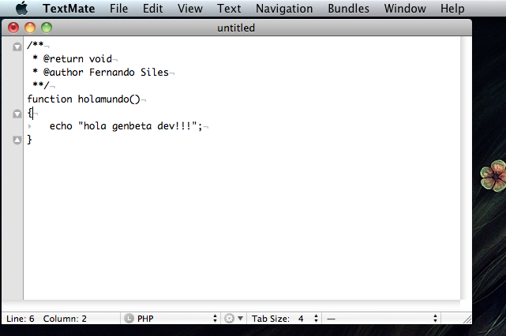

|  |

Los editores de código son una cosa muy seria para los desarrolladores. Cada uno tiene su preferido y el de muchos programadores en plataforma Macintosh es sin duda TextMate. Pues bien, ayer la gente detrás del proyecto anuncio la salida de la primera alpha del anhelado TextMate 2.0, la presentación en sociedad de una reescritura completa del editor.
Anuncian que no se trata de una versión completa (aunque si usable) y piden comprensión (y feedback) a los early adopters. Ante esto, es obvio señalar que todas las novedades que va a tener la versión final no se encuentran en esta tempranera versión (faltan entre otras la pantalla partida, el modo pantalla completa o las esperadas mejoras en el rendimiento) aunque si muchas, referentes a aspectos tan dispares comoa atajos, buffering, temificación, especificaciones de carpetas, selectores de alcance, invocación de terminales e incluso nuevos comandos y gramáticas. Todos los cambios y novedades más relevantes los puedes encontrar en las release notes.
Si tienes una licencia de TextMate y un Mac quizás te interese descargarte esta alpha, probrarla… y claro, luego contarlo a tus amigos de Genbeta Dev, que para eso (y para lo que quieras) están los comentarios de este post.
Vía y descarga | TextMate Blog
| |